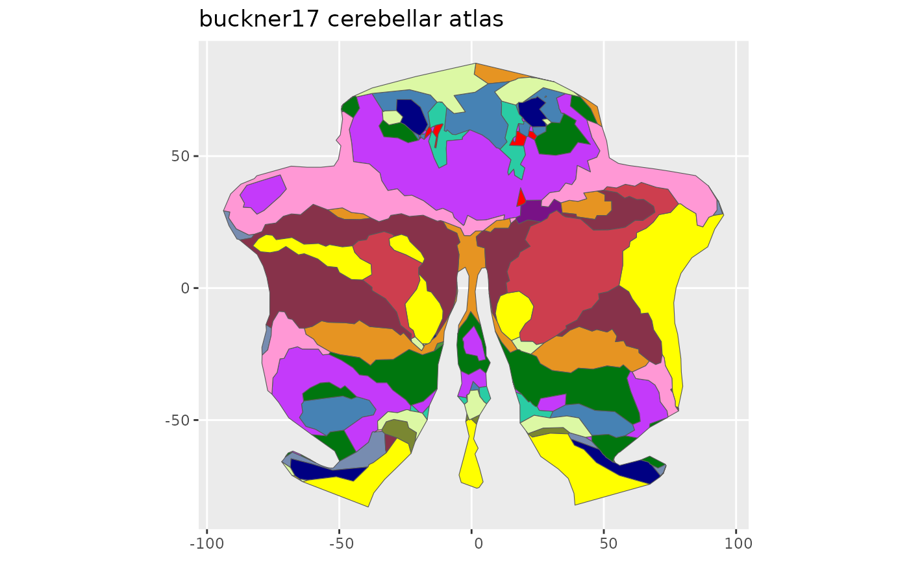

Cerebellar parcellation into Yeo 17 resting-state functional networks from Buckner et al. (2011).
buckner17()A ggseg.formats::ggseg_atlas object (cerebellar).
Buckner RL, et al. (2011). The organization of the human cerebellum estimated by intrinsic functional connectivity. Journal of Neurophysiology, 106(5):2322-2345. doi:10.1152/jn.00339.2011
Other ggseg_atlases:
buckner7(),
ji10(),
mdtb10(),
nettekoven32(),
xue10()
Other cerebellar_atlases:
buckner7(),
ji10(),
mdtb10(),
nettekoven32(),
xue10()
buckner17()
#>
#> ── buckner17 ggseg atlas ───────────────────────────────────────────────────────
#> Type: cerebellar
#> Regions: 17
#> Hemispheres: midline
#> Views: flatmap
#> Palette: ✔
#> Rendering: ✔ ggseg
#> ✔ ggseg3d (vertices)
#> ────────────────────────────────────────────────────────────────────────────────
#> # A tibble: 17 × 3
#> hemi region label
#> <chr> <chr> <chr>
#> 1 midline 17Networks_1 midline_17Networks_1
#> 2 midline 17Networks_2 midline_17Networks_2
#> 3 midline 17Networks_3 midline_17Networks_3
#> 4 midline 17Networks_4 midline_17Networks_4
#> 5 midline 17Networks_5 midline_17Networks_5
#> 6 midline 17Networks_6 midline_17Networks_6
#> 7 midline 17Networks_7 midline_17Networks_7
#> 8 midline 17Networks_8 midline_17Networks_8
#> 9 midline 17Networks_9 midline_17Networks_9
#> 10 midline 17Networks_10 midline_17Networks_10
#> 11 midline 17Networks_11 midline_17Networks_11
#> 12 midline 17Networks_12 midline_17Networks_12
#> 13 midline 17Networks_13 midline_17Networks_13
#> 14 midline 17Networks_14 midline_17Networks_14
#> 15 midline 17Networks_15 midline_17Networks_15
#> 16 midline 17Networks_16 midline_17Networks_16
#> 17 midline 17Networks_17 midline_17Networks_17
plot(buckner17())
